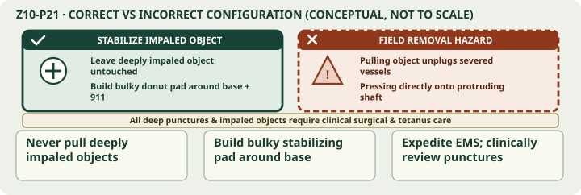

Z10-P21 · Wilderness medicine · New manuscript
Stabilize impaled objects in place and escalate deep puncture wounds
Prevent catastrophic bleeding and deep tissue damage by never pulling out impaled objects and recognizing hidden puncture infection risks.
When it applies · Branches, glass, metal, arrows, or fishhooks deeply embedded in tissue, plus deep nail/thorn/splinter punctures.
Equipment · Bulky clean gauze pads, roller bandage/tape, and emergency communication.

Actions
- If an object is impaled deeply in the body, do NOT pull it out—the object may be plugging a severed blood vessel, and removing it can trigger fatal internal or external hemorrhage.[M06, M01]
- Control bleeding around the base with gentle pressure on either side without pressing on the object itself, build bulky donut-style padding around it to prevent movement, and activate 911/EMS.[M06, M01, T02]
- Treat all deep puncture wounds (even small ones that barely bleed, such as stepping on a rusty nail or deep stick puncture) as high-infection and tetanus hazards requiring clinical cleaning and evaluation.[M06]
Failure recognition · Pulling a wooden branch out of a thigh or chest in the backcountry and triggering massive uncontrollable arterial bleeding.[M06, M01]
Verify · Confirm impaled object is padded immobile without shifting, surrounding bleeding is monitored, and clinical evacuation is underway.[M06, T02]
Stop or change course · Any impaled object in the head, neck, eye, chest, or abdomen is an immediate life-threatening emergency requiring urgent EMS extraction.[M06, M18, T02]
Evidence and editorial notes
- M01 · American College of Surgeons · STOP THE BLEED Training Course (current web edition)
- Section: Ensure Your Own Safety; Find Life-Threatening Bleeding; Compress · Conditions: Lay responder encountering severe external hemorrhage
Support: Ensure scene safety first, call 911, expose the wound to locate life-threatening bleeding, and apply firm continuous direct pressure with clean gauze or cloth.
Limitations: Does not replace formal hands-on Stop the Bleed training or EMS trauma care. · Conflicting evidence: None across ACS/ARC guidelines.
Editorial note: Separates life-threatening arterial/venous hemorrhage from minor scrapes. · Specialist reviewer: Wilderness medicine and trauma EMS
Primary source · checked 2026-11-24 - M06 · NIH / MedlinePlus · Wounds and Injuries (current web edition)
- Section: Minor Wound Cleaning, Protection, and Infection Red Flags · Conditions: Superficial cuts, scrapes, and abrasions with potable water available
Support: Rinse minor wounds thoroughly with clean potable water, cover with a clean sterile dressing, and monitor for worsening redness, warmth, swelling, pus, red streaks, or fever.
Limitations: Deep punctures, animal bites, retained foreign bodies, or heavily contaminated wounds require clinical evaluation and tetanus review. · Conflicting evidence: None; separates clean potable rinsing from harsh chemical wound scrubbing.
Editorial note: Anchors field wound hygiene and infection escalation cards. · Specialist reviewer: Wilderness medicine and wound care
Primary source · checked 2026-11-24 - M18 · National Capital Poison Center · First Aid for Poisonings (Current web edition)
- Section: In the eye: immediate irrigation; after irrigation · Conditions: Liquid chemical splash in the eye; exclude embedded or penetrating injury
Support: Begin immediate room-temperature water irrigation for at least 15–20 minutes and obtain poison-center direction.
Limitations: Severe or persistent symptoms need urgent evaluation. A penetrating injury follows a separate no-pressure emergency care branch; consult ocular trauma guidance. · Conflicting evidence: See A02 claim audit for boundaries.
Editorial note: Core eye-trauma decision boundary in Z10. · Specialist reviewer: Ophthalmology and emergency medicine
Primary source · checked 2026-11-25 - T02 · American Red Cross · First Aid Steps (current web edition)
- Section: First Aid Steps > Call 9-1-1 · Conditions: Lay emergency response to unresponsiveness, abnormal breathing or severe bleeding
Support: Activate EMS and get needed equipment. Follow dispatcher directions and act within training.
Limitations: Remote locations may delay EMS arrival, requiring sustained stabilization after activation. · Conflicting evidence: None; aligns with NPS-E.
Editorial note: Mandates early emergency activation and dispatcher adherence. · Specialist reviewer: EMS and wilderness medicine
Primary source · checked 2026-11-24
Source lineage · NIH MedlinePlus Wounds; new manuscript · Classification · New manuscript.